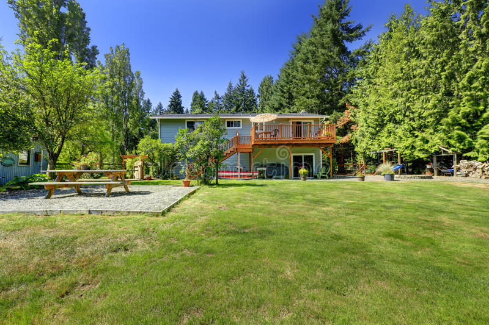

MIS ASPIRACIONES
OBJETIVOS
- Mejorar mi autoestima
- Ser siempre la misma persona, independientemente de lo que pueda tener
- No perder nunca la esperanza y creer que lo que yo quiera en la vida lo puedo lograr
- Hacer las cosas con esfuerzo y sin pereza
- Estar siempre en comunicación con amigos y familiares para saber que no estoy sola
ASPIRACIONES
- Tener la amistad de las personas que me rodeen
- Encontrar una motivacion en la vida
- Tener mi propia familia
- terminar la universidad con buen promedio
ESPERANZAS
- Calidad de vida para determinar el nivel de ingresos y de comodidades en mi vida
- Hace parte de mis esperanzas lograr lo que quiero, espero que al rededor de 15 años mi vida sea una vida ya realizada
SUEÑOS
- Ser ingeniera en sistemas computacionales
- hacer una maestria
- Tener una casa con un gran patio con mucho pasto
METAS
- Ser ingeniera
- Tener una vida profesional
- Tener casa y carro propio
- ayudar siempre a mis papas y pasar el mayor tiempo posible con ellos y mis hermanas
- Ser independiente
- Tener al menos 2 hijos ( después de los 29 )
- Construir una familia
- Trabajo estable
